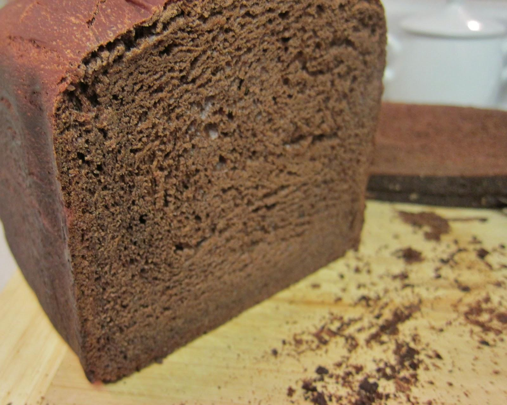

Gluten Free Chocolate Cake

Perfect chocolate cake and gluten free at that!
Ingredients
- 2 eggs
- vanilla (optional)
- 100g sugar
- 60ml vegetable oil
- 130g (up to 150) GF flour
- 2 soup spoon cocoa powder
- 6g baking powder
- 120ml milk
- 1 butter spoon
Steps
- Preheat your oven at 180°c.
- Beat the eggs vanilla and sugar in a bowl for 2 minutes.
- Add the oil to the mix and beat again till the mixture is white.
- Add the flour, cocoa and baking powder over a strainer and add to the mix.
- Mix well with a spatula
- Heat the butter and milk together and add them while still hot to the mix.
- With a spatula mix the ingredients throughout.
- Put in a cooking tray and cook for 35 minutes at 180°c.
cool for 10 minutes